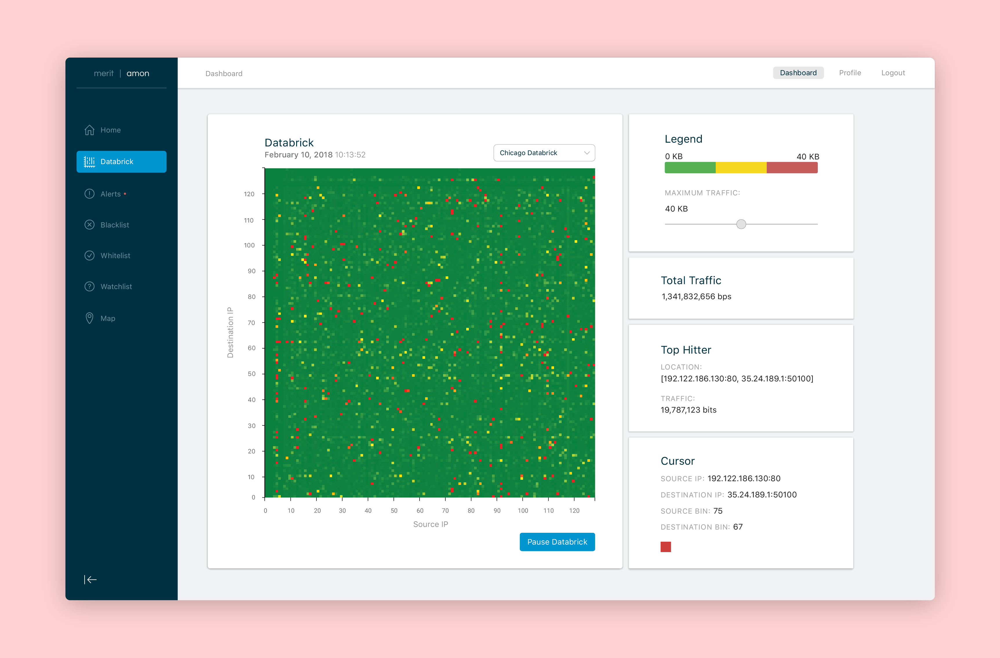

Lifework An application to make life work
Lifework began as a project for a class and grew into a concept allowing me to explore problem solving and design thinking in the context of my everyday life
Interaction Design Visual Design Illustration Motion Design
Individual Project

The Project
The Problem
College students and young professionals need something that keeps track of their work and social lives and organizes their time efficiently so they can live a more balanced, stress-free life.
While the initial intent was to design an app that manages time spent solely on work that must be done, reflection on the idea helped me narrow down to the core purpose of the app: to balance your time between work, life, and leisure. Lifework is meant to reduce the stress of constantly thinking about time in terms of work that must be done and therefore using any leftover time for social activities or relaxation. Instead, it builds social and free time directly into the user’s schedule.
My Role
Being a individual project, my role covers every step of the process, from ideation and research to design and testing.
The Process
Simplifying Network Traffic
My work pulls data from our AMON databases that collect information on all of our network traffic and visualizes this information based on the amount of traffic that is flowing over the network in terms of source and destination IP addresses.
To better understand this, you can think of network traffic like physical mail, such as letters and packages, being sent in, out of, and around the state of Michigan. In this case, my work would basically be to look at the sending and receiving address for each piece of mail and the volume of that mail. With this information, I am able to visualize in real-time where mail is being sent and received and how much mail is being moved between these addresses.
What Started it All
The visualization that started it all is known as the IP Pair. This displays all the network traffic in a single, real-time visualization that updates every three seconds to show current traffic. While this feature was already implemented in PHP on the AMON Dashboard when I joined the team, my first step was to recreate this visualization for my Python-based, Bokeh Dashboard.

Developing New Features
After this small application was complete, the next step was to start prototyping new visualizations of the network data. First, I developed an application that allows a user to look at past IP Pair visualization using sliders to change the date and time of data that they are viewing.

Next, I developed an application that visualizes the total traffic flowing over the network in real-time as well as multiple other simple applications to visualize similar network traffic data.

More Advanced Applications
After implementing numerous other visualization applications, I began working on creating applications that allow for more a granular look at the data, such as listing alert information on possible internet attacks like DDoS attacks, or visualizations of subnets within the data to look at network traffic only entering or leaving from a certain sub-network such as the University of Michigan.

Connecting the Dots
In total, I have 10 prototyped, functional applications built. The main issue that another developer and I realized was that while my rapid prototyping was working smoothly, the actual AMON Dashboard was suffering from its construction using a PHP web development framework. With this in mind, we decided to replicate the AMON Dashboard using a Python web development framework called Flask. Flask is lightweight, allows for easier adoption when this project becomes available as an open-source project, and allows for incorporation of the Bokeh applications that I have built.
Now that we have the skeleton and a few features built using Flask, the next steps are to implement my Bokeh applications, and situate everything in a manner that allows for easy hand-off to the next wave of developers that will be working on AMON.
Takeaways
Asking Questions
Coming into the project, I found myself in a position where I had not been throughout my education or other jobs I’ve had: utter confusion. Throughout my education, I could almost always get by without admitting my confusion. I could read a textbook or wait for another student to ask the question that I had. At Merit, however, nobody was there to ask these questions for me, and randomly picking articles and documentation to read about the subject often felt like reading a foreign language. I quickly learned that I had to admit my confusion and ask questions, even about seemingly simple concepts, to ensure that I could move forward in the project.
Applying Prior Experience to New Fields
Aside from asking for help to understand the field that I was working in, I find myself in a position where I am able to explore the relationship between my experience in design with the work I am doing with internet networks and security. My work at Merit is to not only to develop applications for our AMON software, but also to ensure that what we are building offers a simple interface for people to interact with and understand the data they observe. While the concept of internet networks and security was a new field to me, the way people interact with the applications that let them explore this field ties back to all the experience I have with user experience design and human computer interaction.